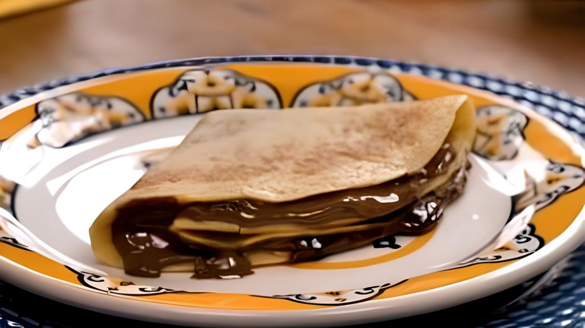
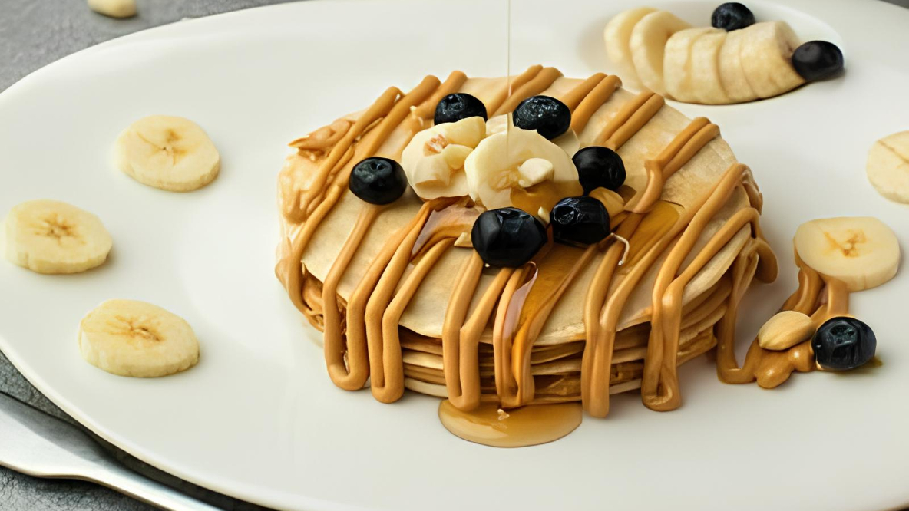
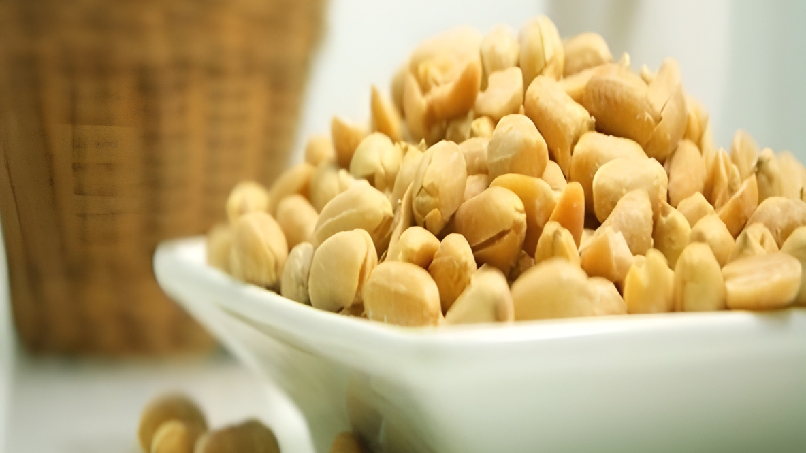
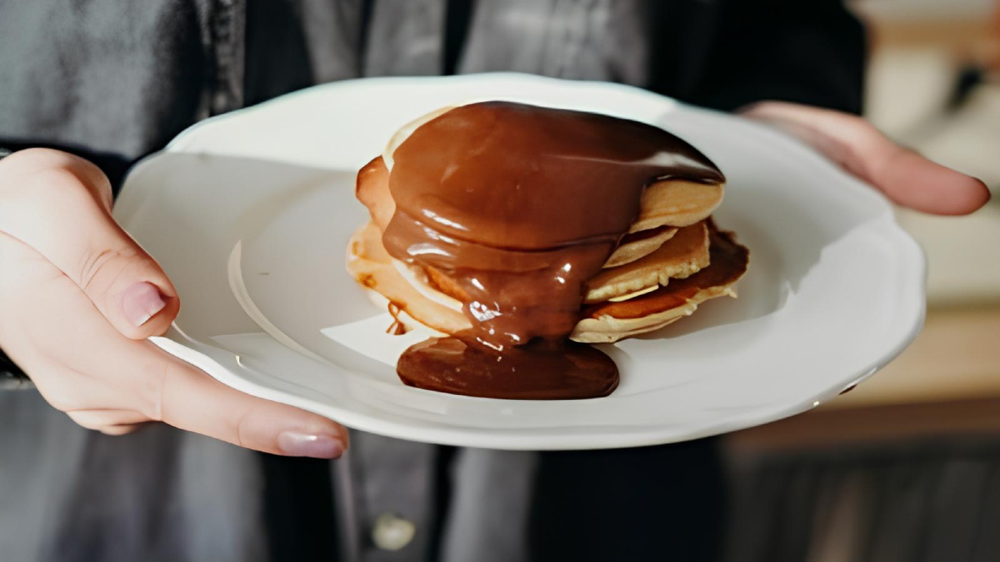
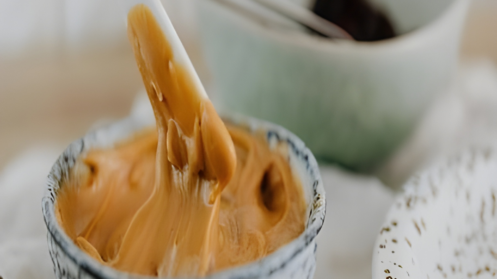

Receita de Panqueca de Creme de Avelã e Amendoim
Ingredientes
Massa
- 1 xícara de farinha de trigo;
- 1 xícara de leite;
- 1 ovo;
- 1 colher de sopa de óleo (ou manteiga derretida);
- 1 pitada de sal;
- 1 colher de sopa de açúcar (opcional).
Recheio
- 1/2 xícara de creme de avelã;
- 2 colheres de sopa de pasta de amendoim;
- Amendoim picado para polvilhar (opcional).
Cobertura
- Chocolate derretido ou calda de chocolate (opcional);
- Açúcar de confeiteiro para polvilhar (opcional).
Modo de Preparo
- Prepare a Massa: Em uma tigela, misture a farinha, o leite, o ovo, o óleo, o sal e o açúcar até obter uma massa lisa e homogênea.
- Cozinhe as Panquecas: Aqueça uma frigideira antiaderente, unte com óleo ou manteiga e adicione uma concha de massa. Cozinhe cada lado por 1-2 minutos até dourar.
- Recheie as Panquecas: Espalhe uma camada de creme de avelã e, por cima, um pouco de pasta de amendoim. Dobre ou enrole as panquecas.
- Finalização: Regue com chocolate derretido ou polvilhe açúcar de confeiteiro e amendoim picado por cima, se desejar.